Motion Camera Calibration Wizard
The MCC wizard application is a handy tool to perform the Motion Camera Calibration (MCC) using the ifm Vision Assistant (iVA). Please follow the steps below to perform the calibration with the wizard.
Prerequisites
Install the ifm Vision Assistant software (download it on ifm.com).
Print the checkerboard provided by ifm at 100 % scale and fix it to a flat surface without air gaps. The print size should be 600 mm by 800 mm, meaning the smaller squares measure 100 mm by 100 mm. Please find the checkerboard in PDF format
here
Note
When using iVA, you have the option to use either the MCC wizard or the MCC application. We recommend using the wizard version, which is built on top of the native embedded MCC application.
Please note that only one MCC application instance should be performed at a time (either application or wizard). If an MCC application is running, it should be stopped before running the wizard.
Step 0: Create a Calibration Wizard
Create a
Calibration Wizard(MCC)from the applications in theApplicationwindow by clicking on the icon.
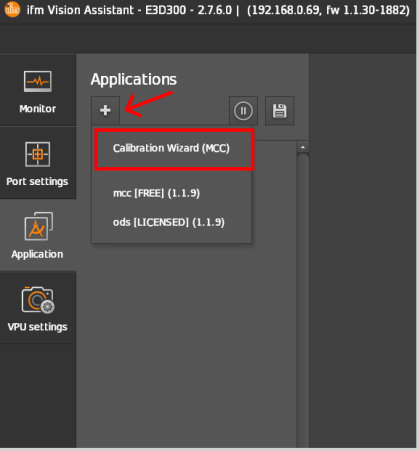
Step 1: Overview
After the successful creation of the calibration wizard, a new window pops up with an overview of the extrinsic calibration process and the steps involved.
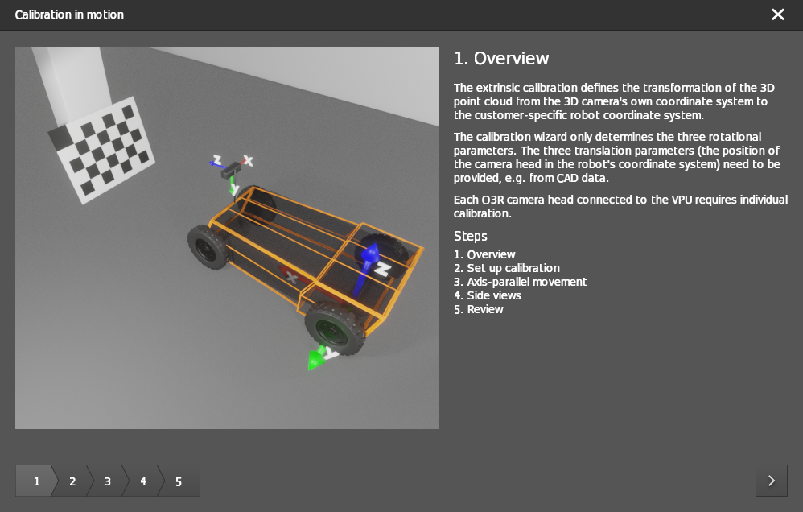
Note
Click on the arrow in the bottom right corner of the pop-up window to navigate through the calibration procedure steps.
Step 2: Setup calibration
Select the port to be calibrated.
Select the illumination mode based on your ambient light.
Default:
Ambient illuminationWhen there is not enough ambient light, change this to
Active illumination
Enter the translation parameters of the camera head with respect to the origin of the robot coordinate system. These can be derived from the CAD drawings of the vehicle.
Configure the cell size of the checkerboard target in
Checkerboard pattern square sizebased on the printed checkerboard. If the checkerboard is printed at 100 % scale then the cell size would be equal to 0.1m.
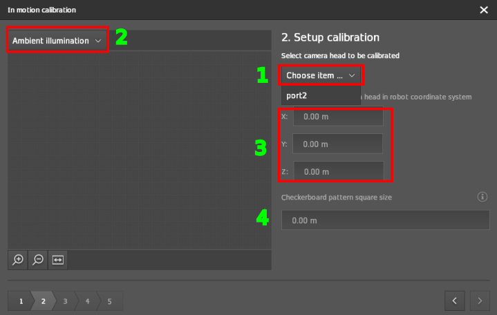
After selecting the port to calibrate, the live view starts.
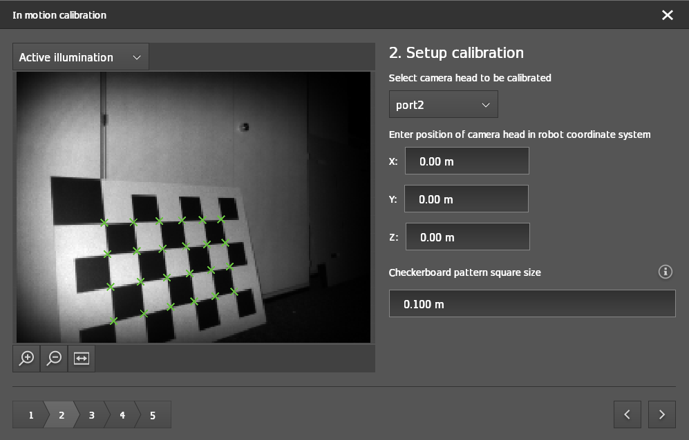
Step 3: Axis-parallel movement
Select the driving direction of your robot:
Forward (+x): Moving towards the checkerboardBackward (-x): Moving away from the checkerboardTo the left (+y): Moving from right to left of the checkerboard (for the side-mounted cameras)To the right (-y): Moving from left to right of the checkerboard (for the side-mounted cameras)
Click on the
Startbutton and start the robot movement. The MCC algorithm starts to grab images during motion. Make sure that motion is in a straight line and the minimum movement range should be 50 cm.
Note
The algorithm checks if there was enough motion since the last frame. So you can‘t be too slow. When you move too fast there could be issues with motion blur. We recommend a speed of 0.5 m/s.
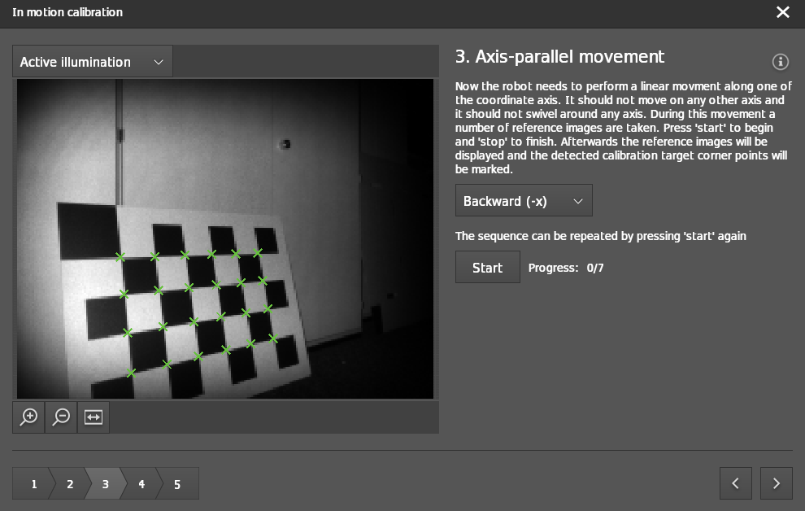
As an example, you can look at the images below where we start in front of the checkerboard and we drive in -x away from the checkerboard.

Step 4: Side Views
Move the robot to the right of the first motion line and turn it to the left so that the checkerboard is in the field of view of the camera. The checkerboard should fill at least 50% of the image. Click on
Right image buttonto capture the checkerboard from the right side of the motion path.
For enhanced comprehension, reference the images illustrating the robot’s positioning with a front-facing camera.
Note
The offset to the first motion line should be a minimum of 25 cm.

Pose of the robot while taking the snapshot.
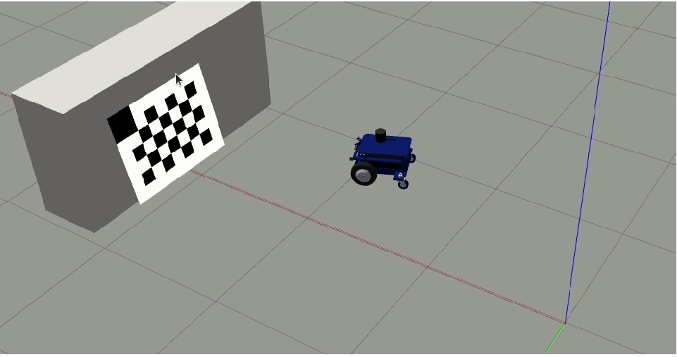
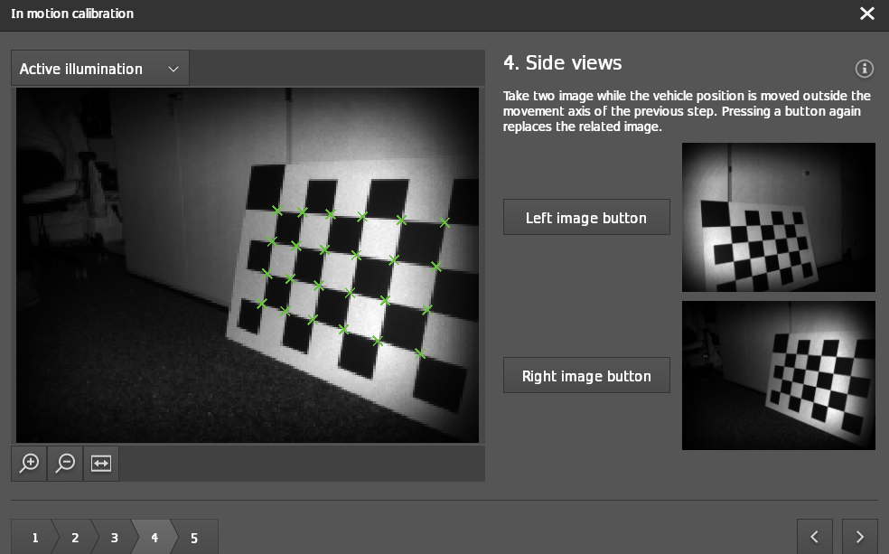
Repeat the previous step now to the left of the first line of motion. Click on
Left image buttonto capture the checkerboard from the left side .
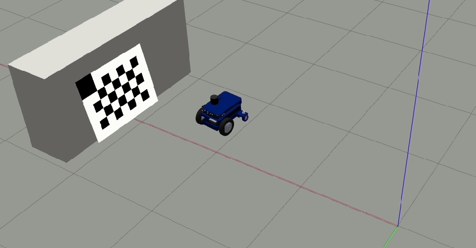
Pose of the robot while taking the snapshot.
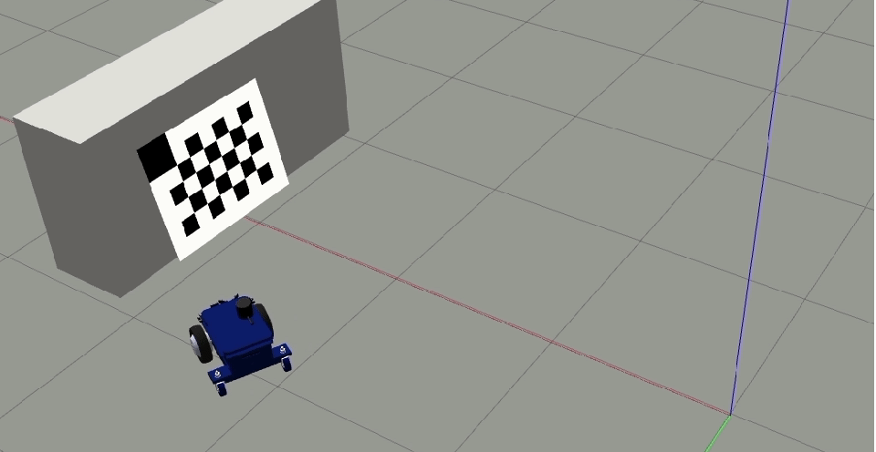
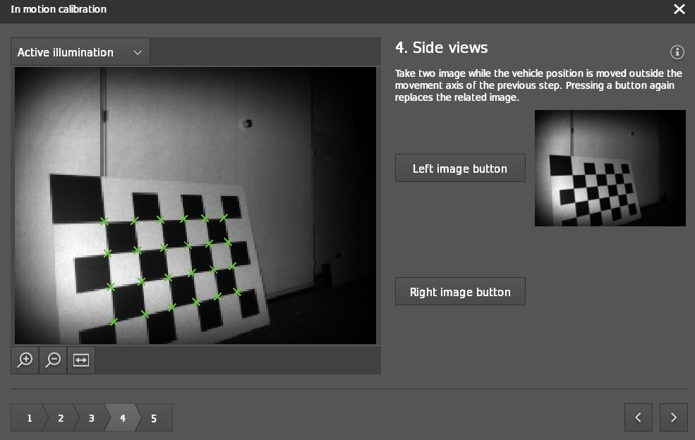
Step 5: Review
The algorithm estimates the rotational parameters of the camera head with respect to the robot coordinate system. After reviewing the output, the calibration result is displayed.
If the calibration is successful, the output is displayed as shown in the image below.
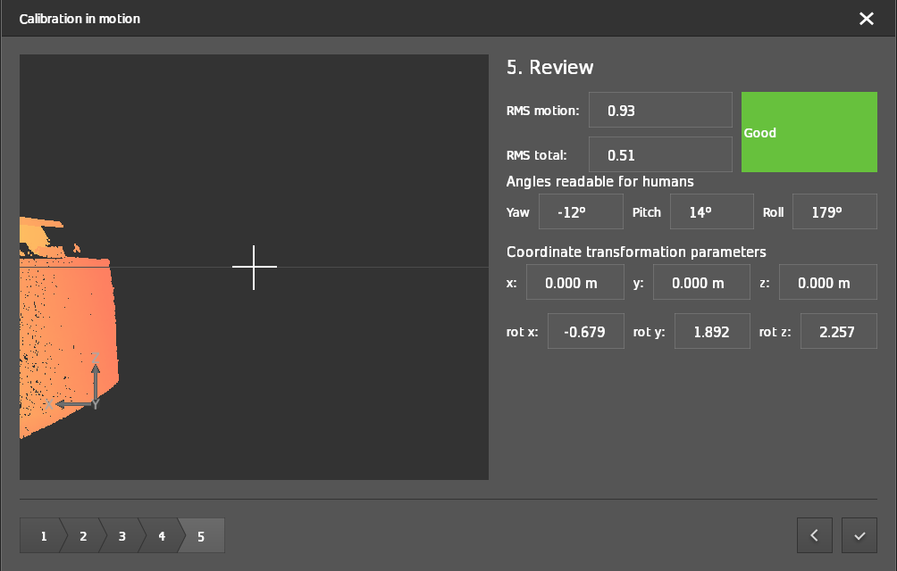
Click the checkmark button in the bottom right-hand corner to write the generated calibration values to the device.
If the calibration is unsuccessful, then the reason for the calibration failure is displayed as a notification pop-up.
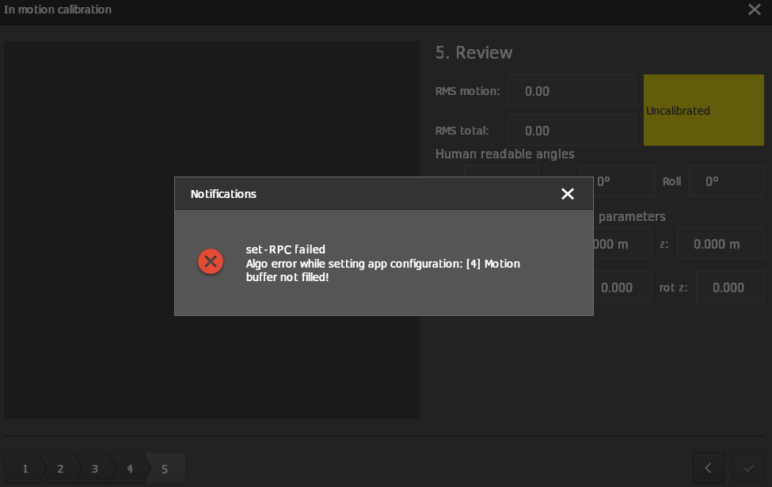
Example for the cameras mounted on the sides of robot
If the robots are not omnidirectional, then the motion to perform for side cameras should follow the GIF below.
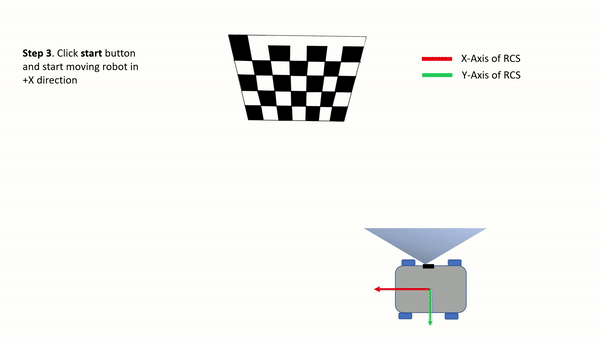